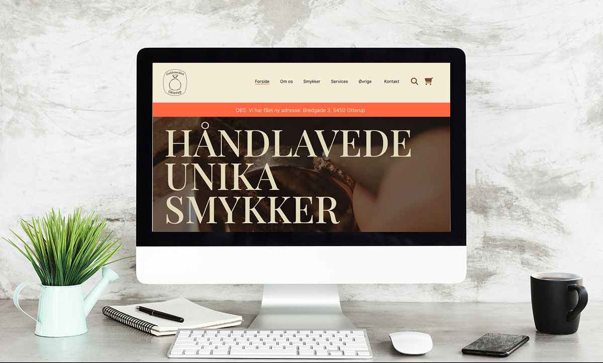
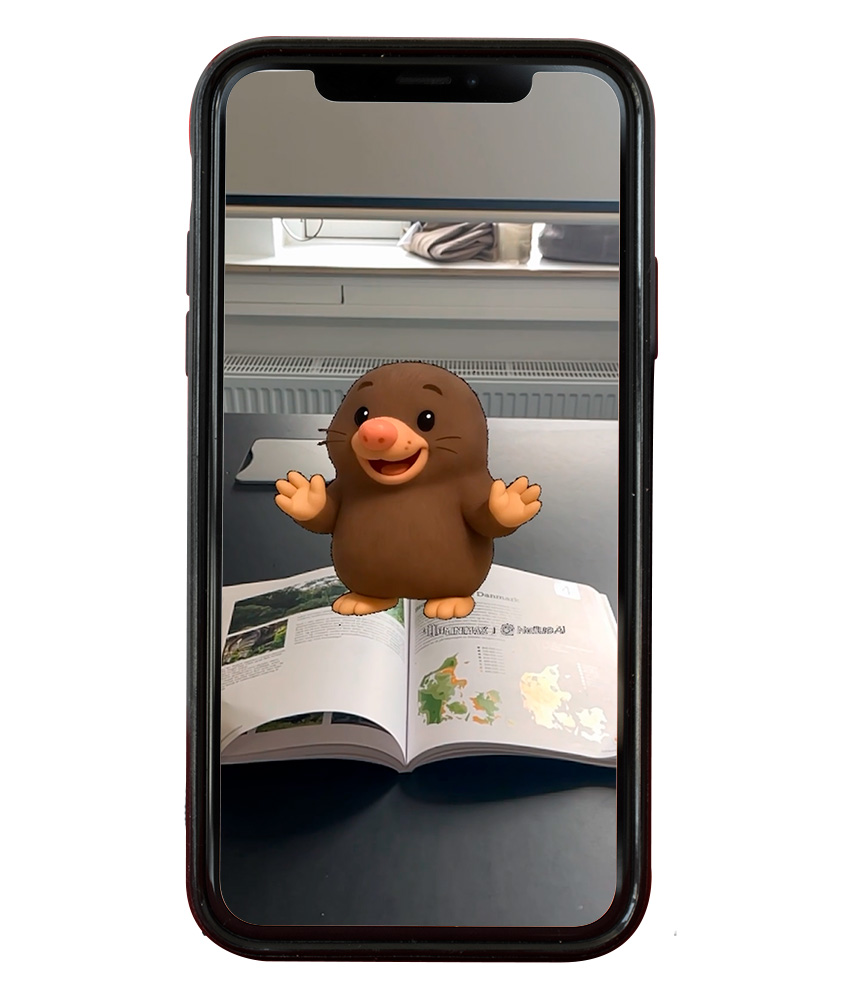
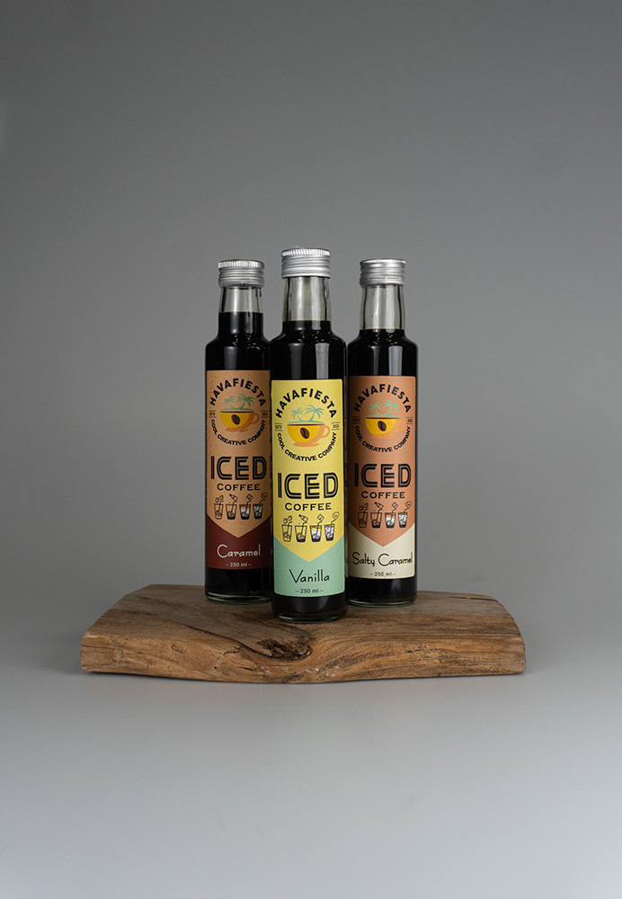
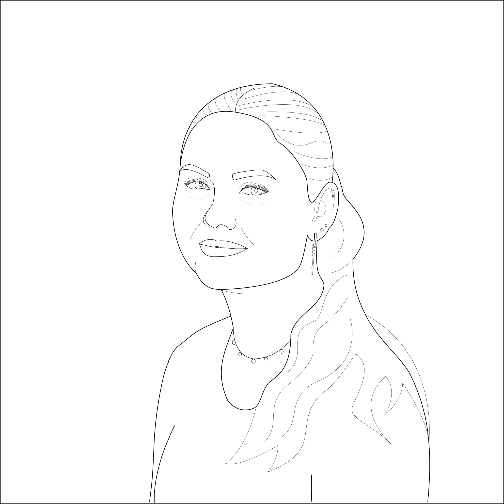

Portfolio
Min portfolio byder på et udpluk af opgaver og projekter jeg har beskæftiget mig med i min tid på studiet, og viser noget af det jeg kan lave med de værktøjer jeg har til rådighed.
Hover over projekt-billederne for at læse mere om projektet, læringsudbyttet og anvendte værktøjer.

Redesign af hjemmeside
Re-designet er udarbejdet i forbindelse med projekt 1. Her var opgaven at finde en forældet hjemmeside, og re-designe den på en måde, så den appellerer til kunderne.
Den tildelte tid tillod, at jeg kunne spille en rolle i alle aspekter af projektet
Projektet gav erfaring med den arbejdsproces, der ligger bag det at designe eller re-designe en hjemmeside, så den passer til kundernes behov og forventninger.
Gruppearbejde
Figma

AR prototype
2. projekt lød på, at vi skulle udarbejde en digital, interaktiv installation for Økolariets yngste besøgende.
Jeg havde flere opgaver i forbindelse med projektet, men den mest prominente var, udarbejdelsen af prototypen.
I løbet af projektet har jeg lært et nyt Adobe program at kende samt udvidet mit kendskab til AI og brugen af samme.
Til prototypen, er AI blevet brugt til at generere billedet og animere den, så den bevægede sig, og dermed blev mere engagerende. Der er desuden blevet brugt tekst til tale. AI er ikke blevet brugt til at gøre prototypen interaktiv.
Gruppearbejde
Adobe Aero, diverse AI hjemmesider

Produktbillede
Vi har i undervisningen arbejdet med fotografering, her har vi haft et fokus på produktbilleder.
I forbindelse med fotograferingen har jeg opnået praktisk erfaring med at indstille et kamera samt, hvordan man arbejder med lys og komposition.
Jeg har efterfølgende også redigeret produktbilledet en smule, således at farverne blev mere fremtrædende, og på den måde virke mere tiltalende.
Individuelt
Adobe Lightroom Classic
Moving Art
Levendegjort kunst baseret på et maleri. Jeg har her taget udgangspunkt i portrættet ”Samuel Rogers”, der i sin tid er malet af John Linnell. Jeg har valgt at tage en sjov og moderne vinkel på maleriet.
Gennem denne workshop har jeg tilegnet mig erfaring med visuel storytelling gennem digital billed- og videobehandling
Individuelt
Adobe Photohop, Adobe After Effects
CSS animation
Workshoppens opgave lød på, at vi skulle lave et spritesheet, og kode det, så vi endte ud med en animation, der gerne skulle være et loop.
Under workshoppen fik jeg erfaring med, hvordan man anvendte css til at lave en animation.
Individuelt
Adobe Illustrator, css, html

Pen-tool portræt
For at øve brugen af pen-tool, fik vi tildelt en frivillig hjemmeopgave, som gik ud på, at vi skulle bruge pen-tool til at lave et selvportræt ud fra et billede.
Jeg valgte at beholde portrættet uden farve, da jeg blev glad for resultatet.
Individuelt
Adobe Illustrator